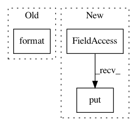

3725c2181c1a08071673295c076384880748fd3d,logsProcess.py,LogsProcess,process_global_data,#LogsProcess#,125
Before Change
modified = __database__.wasProfileTWModified(profileid, twid)
self.outputqueue.put("40|logs|\t[Logs] Profile: {}. TW {}. Modified {}".format(profileid, twid, modified))
if modified:
self.outputqueue.put("50|logs|\t[Logs] Profile: {}. TW {}. Was Modified. So process it".format(profileid, twid))
dstips = __database__.getDstIPsfromProfileTW(profileid, twid)
if dstips:
// Add dstips
After Change
return True
except Exception as inst:
self.outputqueue.put("01|logs|\t[Logs] Error in process_global_data in LogsProcess")
self.outputqueue.put("01|logs|\t[Logs] {}".format(type(inst)))
self.outputqueue.put("01|logs|\t[Logs] {}".format(inst))
sys.exit(1)
In pattern: SUPERPATTERN
Frequency: 3
Non-data size: 3
Instances
Project Name: stratosphereips/StratosphereLinuxIPS
Commit Name: 3725c2181c1a08071673295c076384880748fd3d
Time: 2019-01-17
Author: eldraco@gmail.com
File Name: logsProcess.py
Class Name: LogsProcess
Method Name: process_global_data
Project Name: facebookresearch/ParlAI
Commit Name: 9ad1d2da68aa4acf817562502340bf319276b283
Time: 2019-05-14
Author: jju@fb.com
File Name: parlai/mturk/core/dev/socket_manager.py
Class Name: SocketManager
Method Name: queue_packet
Project Name: stratosphereips/StratosphereLinuxIPS
Commit Name: c8f01990f1498f76636e3285437332318bef2259
Time: 2019-01-06
Author: eldraco@gmail.com
File Name: profilerProcess.py
Class Name: ProfilerProcess
Method Name: get_timewindow